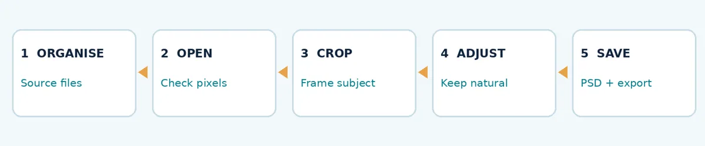
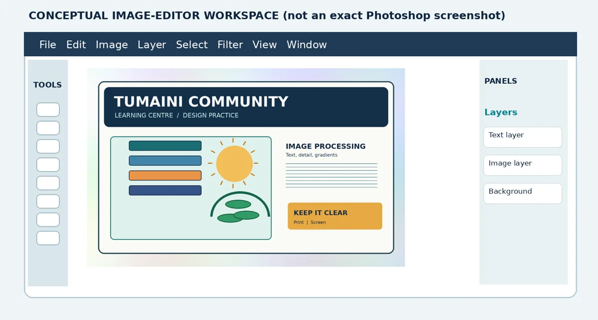
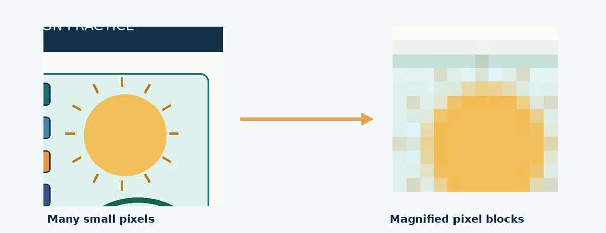
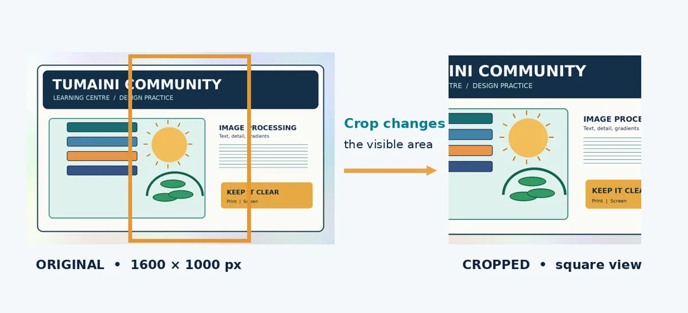
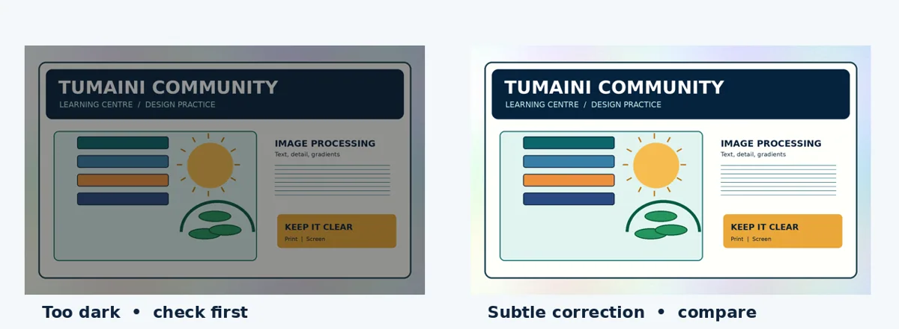
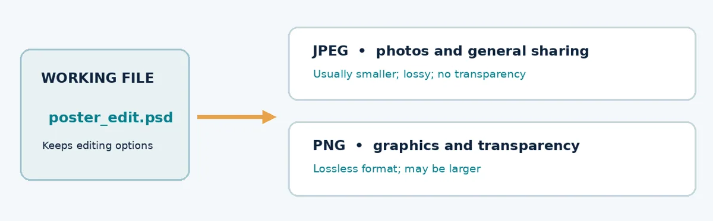

Photoshop Essentials
Prepare and correct a photograph, then save an editable file and export.
Lecture notes
What you should be able to do
- Identify the main Photoshop workspace areas and explain the difference between opening an image and creating a new document.
- Organise source images and working files without overwriting an original photograph.
- Crop an image, change its pixel dimensions appropriately, and carry out a small brightness or contrast correction.
- Save an editable .PSD project and export a correctly named JPEG or PNG for sharing.
4.1 Why Photoshop is useful in desktop publishing
Adobe Photoshop is primarily designed for working with raster images, particularly photographs and pixel-based compositions. In publishing, an image may need to be cropped, straightened, resized or adjusted before it is placed on a poster or hand-out. Photoshop is not the only program capable of these tasks; other image editors can provide similar functions, but the module introduces Photoshop as its main image-editing environment.
Consider the Tumaini Community Learning Centre hand-out titled “Stay Safe Online”. A designer might prepare a photograph or illustration in Photoshop, then combine it with headings and explanatory text in the finished publication. Image editing serves the reader: unnecessary surroundings should not distract from the message, and the image should remain clear at the intended size.
4.2 Organise your project before editing
Create a folder called Tumaini_Handout. Inside it, create 01_Originals, 02_Working_Files and 03_Exports. Put unmodified images in 01_Originals. Save editable Photoshop documents in 02_Working_Files. Place images intended for use in a publication in 03_Exports. This simple structure reduces confusion and makes it easier to redo an operation without losing the source image.
A useful filename tells you what a file contains: tumaini_image_edit.psd is clearer than final2_new_good.psd. Avoid saving different files under the same name in the same folder. Only use photographs you created, have permission to use, or may reuse under their stated licence.

Figure 4.1. A manageable image-editing workflow for beginners.
4.3 Find your way around the Photoshop workspace
A workspace is the arrangement of menus, tools, panels and the main document area. The Menu Bar contains commands such as File, Edit and Image. The Tools panel provides shortcuts for selecting, cropping, painting and moving objects. The document window or canvas displays the image being edited. Panels such as Layers and Properties show information and controls for the current document.
The Layers panel becomes especially important when a publication contains several objects, but the first practical can be completed using a single photograph. Do not confuse the canvas with the surrounding grey workspace: the canvas is the image or document area that will be saved or exported.

Figure 4.2. Simplified editing interface showing menus, tools, canvas and panels. This is a conceptual diagram, not a screenshot of a specific Photoshop version.
4.4 Opening an existing image and creating a new document
Use File > Open when you already have a photograph or illustration. Use File > New when you need a fresh blank document, such as a poster of a chosen width and height. A new document needs a suitable size, units and colour mode. For the first practical, opening the supplied image is easier than beginning with a blank canvas.
After opening an image, confirm its width and height in pixels before making changes. Pixel dimensions describe how many pixels the image contains; they do not tell you the physical size of the printed page without a chosen print resolution.
4.5 Understanding image dimensions
A raster image consists of pixels arranged in rows and columns. An image described as 1600 × 1000 pixels has a width of 1600 pixels and a height of 1000 pixels. If the same image is enlarged far beyond its available detail, the pixels become more noticeable and the result may appear soft or blocky.
In Photoshop, Image > Image Size allows you to inspect or change dimensions. When Resample is enabled, the number of pixels can change. When resampling is disabled, changing only the resolution value alters the calculated print dimensions but does not create additional image detail. For web or on-screen output, pixel dimensions are usually the most immediate concern.

Figure 4.3. A close-up demonstrates how a raster image is built from pixels.
4.6 Cropping: choose the part of the image that matters
Cropping changes which part of an image remains visible. It may remove distractions, improve the position of a subject or produce the aspect ratio required by a design. For example, a square image uses a 1:1 aspect ratio, while a landscape image might use 16:9. Aspect ratio describes shape; it does not fix the number of pixels.
A basic crop is made by opening the image, selecting the Crop Tool (usually C), choosing an appropriate ratio, adjusting the boundary and confirming the crop. Check that important words, objects and people remain visible. When a Photoshop version provides “Delete Cropped Pixels”, leaving it off can preserve hidden image areas for later adjustment.

Figure 4.4. Cropping changes the composition and visible content.
4.7 Resizing: change dimensions deliberately
Resizing changes an image’s pixel width and height when resampling is enabled. For example, a 1600 × 1000 source can be resized proportionally to 800 × 500 pixels. The dimensions decrease by half in each direction, but the total pixel count drops to one quarter. Resizing may reduce file size, although the result also depends on file format and compression.
Keep the width–height link or “Constrain Proportions” enabled unless you deliberately want to change the aspect ratio. Otherwise, a person or object could appear stretched. Never expect enlarging 600 × 400 pixels to 3000 × 2000 pixels to recover detail that was not present in the original.
Worked example: basic print-size reasoning
Suppose an illustration is 2400 pixels wide. At an effective resolution of 300 pixels per inch, it can cover 2400 ÷ 300 = 8 inches in width. At 150 pixels per inch it can cover 16 inches, but fine details may be less sharp. These are planning calculations, not promises of print quality; the viewing distance, source detail, printer and paper also matter.
4.8 Simple brightness and contrast corrections
Brightness adjustments raise or lower the overall lightness of an image. Contrast adjustments change the difference between light and dark regions. These corrections can make an image more readable, but extreme settings can erase detail or create unnatural colours. Compare the result against the source image, especially in shadows and highlights.
For a first practical, use Image > Adjustments > Brightness/Contrast or an equivalent control, then make a small change. Advanced adjustment layers provide non-destructive editing and will be explored in the next lecture. Avoid making permanent changes to the only copy of an original photograph.

Figure 4.5. Basic correction should improve visibility while keeping the image natural.
4.9 Saving an editable project and exporting an image
Saving and exporting are not the same task. An editable project preserves the information needed to revisit your work. A Photoshop Document (.PSD) can preserve layers and other editing information when present. A JPEG or PNG is normally used as an output to be placed in another publication, displayed or shared.
JPEG is usually a practical choice for photographs where a smaller file is needed; it uses lossy compression and does not support transparency. PNG uses lossless compression and can preserve transparent areas, making it useful for many graphics, logos or illustrations. The best choice depends on the image, its intended use and the required quality.

Figure 4.6. Keep the editable working project separate from the exported image.
4.10 Follow the basic practical workflow
- Create Tumaini_Handout with 01_Originals, 02_Working_Files and 03_Exports.
- Copy the supplied illustration into 01_Originals and open it in Photoshop.
- Inspect its pixel dimensions. Crop a suitable section without hiding important content.
- Resize an export copy to approximately 800 pixels wide, with proportions locked.
- If needed, make a subtle brightness or contrast adjustment and compare the result with the source.
- Save the working project as 02_Working_Files/tumaini_image_edit.psd. Export 03_Exports/tumaini_image_web.jpg or .png.
- Reopen the exported file and confirm that it displays correctly and has the intended dimensions.
4.11 Common mistakes and how to avoid them
| Mistake | Better practice |
|---|---|
| Editing the only original | Keep an untouched file in 01_Originals. |
| Stretching while resizing | Maintain the original proportions. |
| Cropping away essential details | Preview the composition before applying the crop. |
| Confusing PSD with JPEG/PNG | Save the working file and export a separate output. |
| Over-adjusting contrast | Make small changes and check lost highlight/shadow detail. |
| Assuming PPI creates pixels | Inspect width and height in actual pixels. |
4.12 Review questions
1. What is the main purpose of Photoshop in a desktop publishing workflow?
2. Explain the difference between cropping and resizing, using your own example.
3. An illustration is 1600 × 1000 pixels. What are its dimensions if its width is reduced by half without stretching?
4. Why should an editable PSD and an exported JPEG or PNG be saved separately?
5. Which file would you choose for a transparent logo, and why?
6. Describe three checks you should make before using an edited image in an A4 hand-out.
Further reading
For additional examples, consult the comprehensive module materials, especially Lecture 10 (Photoshop workspace) and Lecture 11 (editing and transforming raster images). The module guideline identifies Photoshop as the principal image-editing application for this topic. Commands can vary between software versions; equivalent operations may be available in GIMP or another compatible image editor.
Simple practical activity
Prepare one image
Open the supplied image or your own photograph. Crop it, resize proportionally, make one small adjustment and save an editable project plus a JPEG or PNG export.
Read the full guided practical instructions
Scenario: Tumaini Community Learning Centre needs one suitable image for an A4 information hand-out called “Stay Safe Online”. Your job is to prepare an image that fits neatly, remains clear, and can be reused later. Use the supplied classroom image. This activity is designed to be completed in a computer laboratory or, where software is unavailable, as a guided paper-based exercise.
Before you start
- Open the supplied resource folder and locate Tumaini_Original_1600x1000.png.
- Create folders named 01_Originals, 02_Working_Files and 03_Exports inside Tumaini_Handout.
- Do not overwrite the original image. Record each completed step in the checklist.
Task A — Identify and organise files
- Copy the supplied source image into 01_Originals.
- Open the source in Photoshop using File > Open.
- Identify the Menu Bar, Tools panel, image canvas and Layers panel.
- Record the width and height of the image: _______ pixels × _______ pixels.
Task B — Crop and resize
- Select the Crop Tool and choose a sensible composition for the hand-out. Keep the main educational illustration clearly visible.
- Inspect the Image Size settings. Make a separate export version approximately 800 pixels wide, keeping the original proportions.
- Write the new height: _______ pixels. Explain briefly why the image must not be stretched.
A crop changes visible content. A resize changes the pixel dimensions.
Task C — Make and inspect a simple correction
- If the image appears too dark or too flat, use a small Brightness/Contrast adjustment.
- Compare the adjusted image with the original. Do important details remain visible?
- Undo any correction that makes colours look unnatural or removes detail.
Task D — Save, export and verify
- Save an editable Photoshop document to 02_Working_Files/tumaini_image_edit.psd.
- Export a JPEG or PNG to 03_Exports/tumaini_image_web.jpg (or .png).
- Reopen the exported file and confirm that it is readable, correctly cropped and approximately 800 pixels wide.
- Submit the editable file, the exported image and the short completion record below.
Completion record
| Check | Yes / No | Observation |
|---|---|---|
| Original kept unchanged | ________ | ____________________________ |
| Image cropped appropriately | ________ | ____________________________ |
| Proportions preserved | ________ | ____________________________ |
| PSD saved | ________ | ____________________________ |
| JPEG/PNG exported | ________ | ____________________________ |
| Export reopened and checked | ________ | ____________________________ |
Reflection
1. What was the most useful change you made to the image? ________________________________________________________________________________
2. Why is your chosen exported format suitable for the hand-out? ________________________________________________________________________________
3. What would you do differently if the image were intended for a large printed poster? ________________________________________________________________________________
Alternative where a computer is not available
Use the printed before-and-after illustrations to draw a crop boundary around the information you would retain. Calculate the new pixel dimensions for an 800-pixel-wide output from a 1600 × 1000 original. In your own words, describe how you would save a working file and an exported copy. Complete the same reflection questions.
Submission reminder: submit your editable project, final exported image and completed reflection. Do not submit only the unchanged source image.
Review questions
Try explaining each answer in your own words before using the quiz.
- Differentiate cropping from resizing.
- Why should you keep the original photograph?
- When would you export JPEG instead of retaining only PSD?